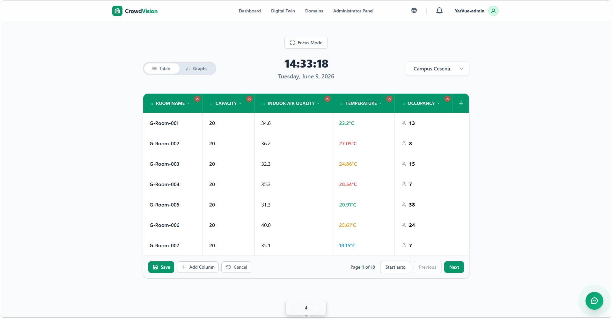
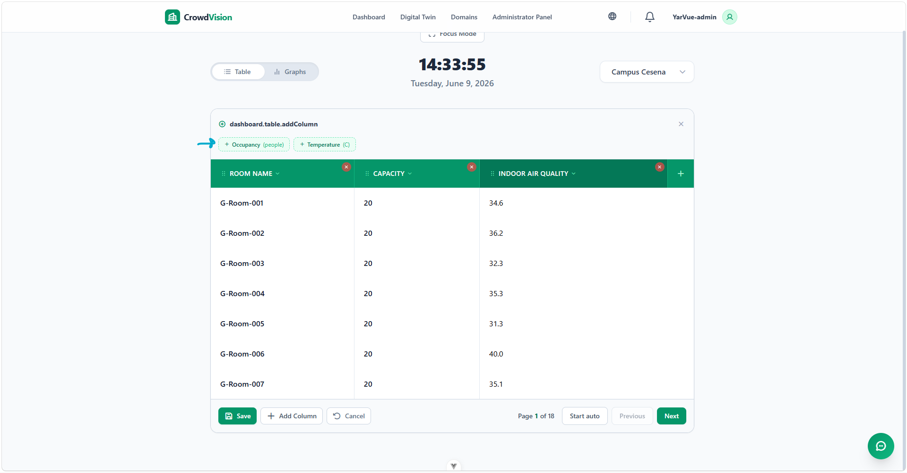
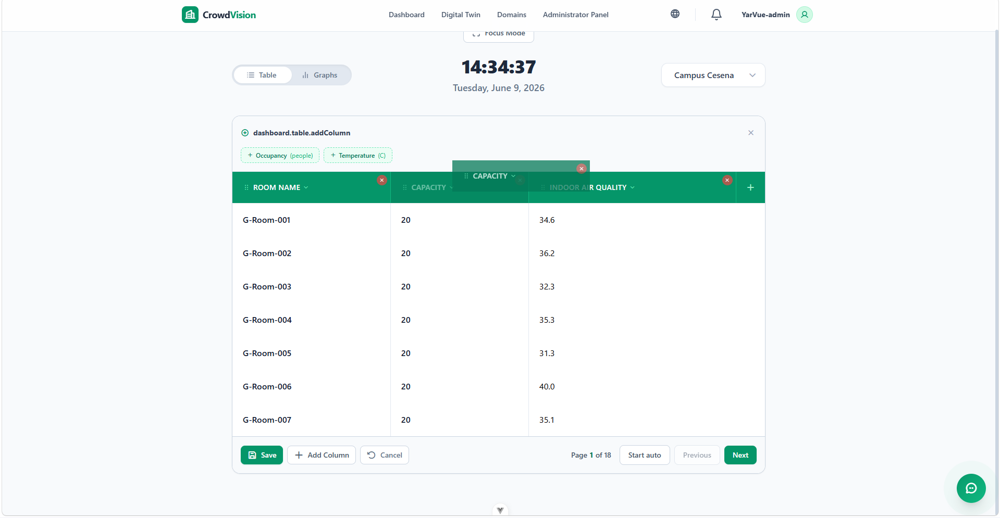

/
User Guide
The dashboard table is a live, fully customizable view of every monitored room in the selected building. You control which columns appear, their order, and which sensor readings they show.
Each row is one room. Each cell updates automatically as new readings arrive — no page reload needed. If a sensor is offline or not yet installed, its cell shows a placeholder (-- or 0) until data starts flowing.
Click Edit in the table’s bottom control bar. This is available only if you have administrator rights for the current building’s domain.
In edit mode each column header gains controls:
| Control | Purpose |
|---|---|
| Grip handle (on the left) | Drag to reorder the column. |
| ✕ badge (top-right) | Remove the column. |
| ▼ caret (next to the title) | Open the swap menu to replace the column. |
| ＋ button (far right of the header row) | Add a new column. |

Figure 1 — In edit mode, each header shows a grip handle, a ✕ to remove, a ▼ to swap, and a ＋ to add.
When you are done, click Save to keep your layout or Cancel to discard changes.

Figure 2 — The add-column panel lists every available metric as a chip.
As soon as a sensor column is saved, CrowdVision begins routing that data to your dashboard. If a sensor for that metric is active in the building, the new column populates with live readings right away.
To replace one column with a different metric without disturbing the others:

Figure 3 — Clicking a header title opens a menu of metrics you can swap in.
Columns, their order, and your selected metrics are saved per building. The next time you open this building — even after a refresh or signing out and back in — the table loads exactly as you left it.
When a building has many rooms, the table paginates.